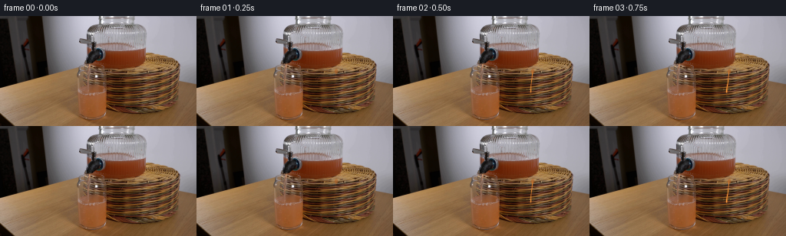
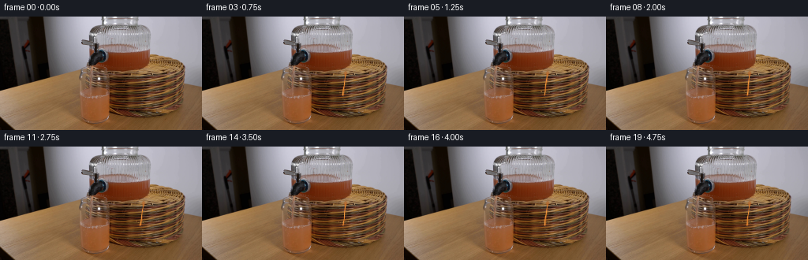

CODING AGENTS AS PIXEL WORLD MODELS
traex/DeepSeek-V4.1-Flash · 0072
点击播放 · 原生 RGB 像素
此结果可播放，但该运行尚未通过最终提交审核。页面展示不代表评测通过。
逐轮保存的候选
回放视频、检查图与代码变化。
每份候选均可单独播放。实际图片检查记录在下方工具轨迹中。
候选 01播放与检查图
点击播放 · 原生 RGB 像素


展开代码变化
--- 上一保存版本
+++ 本次保存版本
@@ -0,0 +1,134 @@
+from pathlib import Path
+
+import cv2
+import numpy as np
+from PIL import Image
+
+import artifact_io
+
+
+CASE_DIR = Path(__file__).resolve().parent
+FRAME_COUNT = 20
+FPS = 4
+WIDTH, HEIGHT = 256, 144
+
+
+def smoothstep(x):
+ x = np.clip(x, 0.0, 1.0)
+ return x * x * (3.0 - 2.0 * x)
+
+
+def ellipse_mask(xx, yy, cx, cy, rx, ry, feather=1.2):
+ d = ((xx - cx) / rx) ** 2 + ((yy - cy) / ry) ** 2
+ return smoothstep((1.0 - d) * max(rx, ry) / feather + 0.5)
+
+
+def make_stream(base, t):
+ frame = base.copy()
+ h, w, _ = frame.shape
+ yy, xx = np.mgrid[:h, :w]
+
+ # The pour begins after a short visual beat, then settles to a steady thin stream.
+ active = smoothstep((t - 0.18) / 0.42)
+ if active <= 0:
+ return frame
+
+ source_x = 181.5
+ impact_x = 178.0 + 0.65 * np.sin(t * 4.0)
+ stream_top = 71.0
+ stream_bottom = 100.5
+ y_norm = np.clip((yy - stream_top) / (stream_bottom - stream_top), 0.0, 1.0)
+ center = source_x + (impact_x - source_x) * y_norm
+ center += 0.28 * np.sin(yy * 0.31 - t * 7.5) * smoothstep((yy - 76.0) / 14.0)
+
+ wobble = 0.45 + 0.12 * np.sin(t * 6.2 + yy * 0.16)
+ width = (1.05 + 0.42 * y_norm) * wobble
+ inside = np.exp(-0.5 * ((xx - center) / width) ** 2)
+ vertical = smoothstep((yy - stream_top + 1.0) / 3.5)
+ vertical *= 1.0 - smoothstep((yy - stream_bottom + 2.0) / 3.0)
+
+ # Grapefruit juice: a saturated amber core with a narrow, brighter refraction line.
+ stream = np.array([225.0, 127.0, 43.0])
+ highlight = np.exp(-0.5 * ((xx - center + width * 0.34) / (width * 0.34)) ** 2)
+ col = stream[None, None, :] + highlight[:, :, None] * np.array([25.0, 31.0, 22.0])
+ alpha = np.clip(inside * vertical * active * (0.90 + 0.10 * highlight), 0.0, 0.94)
+ frame = frame * (1.0 - alpha[:, :, None]) + col * alpha[:, :, None]
+
+ # A small, soft liquid bead at the outlet.
+ bead = ellipse_mask(xx, yy, source_x, stream_top + 1.0, 2.5, 3.2, 1.1)
+ bead_col = np.array([184.0, 99.0, 39.0])
+ frame = frame * (1.0 - 0.50 * bead[:, :, None]) + bead_col * (0.50 * bead[:, :, None])
+
+ # Impact dimple and a few tiny splash highlights around the liquid surface.
+ surface = 98.0
+ ripple = np.exp(-((xx - impact_x) / (4.8 + 3.0 * active)) ** 2)
+ ripple *= np.exp(-((yy - surface) / 1.8) ** 2)
+ frame += ripple[:, :, None] * np.array([17.0, 11.0, 4.0]) * active
+
+ rng = np.random.default_rng(72)
+ for i in range(5):
+ phase = t * (8.0 + i * 0.7) + i * 1.9
+ dx = impact_x + (i - 2) * (2.4 + 0.6 * np.sin(phase)) + 0.7 * np.sin(phase * 1.3)
+ dy = surface - 1.0 - 3.0 * (0.25 + 0.75 * (0.5 + 0.5 * np.sin(phase * 0.9 + i)))
+ radius = 0.55 + 0.35 * rng.random()
+ m = ellipse_mask(xx, yy, dx, dy, radius, radius * 1.15, 0.8) * active
+ frame = frame * (1.0 - 0.32 * m[:, :, None]) + np.array([219.0, 154.0, 71.0]) * (0.32 * m[:, :, None])
+
+ return np.clip(frame, 0, 255).astype(np.uint8)
+
+
+def make_liquid_rise(base, t):
+ frame = base.copy()
+ h, w, _ = frame.shape
+ yy, xx = np.mgrid[:h, :w]
+
+ # The receiving vessel is the transparent form under the dispenser. The
+ # liquid surface is already visible, so the animation extends it upward
+ # without changing the vessel's fixed silhouette.
+ progress = smoothstep((t - 0.30) / 3.75)
+ surface_y = 100.5 - 8.2 * progress
+
+ left = 139.0 + 0.07 * (yy - 82.0)
+ right = 187.0 + 0.07 * (yy - 82.0)
+ body = (xx >= left) & (xx <= right)
+ body &= yy >= surface_y
+ body &= yy <= 127.0
+ body = cv2.GaussianBlur(body.astype(np.float32), (0, 0), 0.75)
+
+ # Preserve the source's existing browns and highlights. The new band is a
+ # restrained amber tint, strongest at the meniscus and weak below it.
+ depth = np.clip((yy - surface_y) / 28.0, 0.0, 1.0)
+ texture = 0.5 + 0.5 * np.sin(xx * 0.52 + yy * 0.27 + t * 2.0)
+ tint = np.array([203.0, 106.0, 35.0])[None, None, :]
+ strength = body[:, :, None] * (0.06 + 0.10 * (1.0 - depth[:, :, None])) * progress
+ frame = frame * (1.0 - strength) + tint * strength
+
+ # A thin, gently undulating meniscus with a darker edge and warm reflection.
+ edge_y = surface_y + 0.65 * np.sin((xx - 139.0) * 0.19 + t * 3.1)
+ meniscus = np.exp(-((yy - edge_y) / 0.78) ** 2)
+ meniscus *= ((xx >= left) & (xx <= right)) * progress
+ frame = frame * (1.0 - 0.16 * meniscus[:, :, None])
+ frame += meniscus[:, :, None] * np.array([18.0, 9.0, 2.0])
+
+ # Keep a soft, narrow left-wall highlight consistent with the photograph.
+ wall = np.exp(-((xx - (left + 1.0)) / 0.85) ** 2) * (yy >= surface_y) * (yy <= 126.0)
+ frame += wall[:, :, None] * np.array([8.0, 6.0, 3.0]) * progress
+ return np.clip(frame, 0, 255).astype(np.uint8)
+
+
+def main():
+ base = np.array(Image.open(CASE_DIR / "first_frame.png").convert("RGB"))
+ frames = []
+ for index in range(FRAME_COUNT):
+ t = index / FPS
+ frame = make_liquid_rise(base, t)
+ frame = make_stream(frame, t)
+ if index == 0:
+ frame = base.copy()
+ frames.append(frame)
+ frames = np.asarray(frames, dtype=np.uint8)
+ artifact_io.save(frames, CASE_DIR)
+
+
+if __name__ == "__main__":
+ main()
候选 02播放与检查图
点击播放 · 原生 RGB 像素

展开代码变化
--- 上一保存版本
+++ 本次保存版本
@@ -33,16 +33,18 @@
if active <= 0:
return frame
- source_x = 181.5
- impact_x = 178.0 + 0.65 * np.sin(t * 4.0)
- stream_top = 71.0
- stream_bottom = 100.5
+ source_x = 197.0
+ impact_x = 184.0 + 0.55 * np.sin(t * 4.0)
+ stream_top = 65.0
+ fill = smoothstep((t - 0.30) / 3.75)
+ surface = 91.0 - 10.5 * fill
+ stream_bottom = surface + 2.4
y_norm = np.clip((yy - stream_top) / (stream_bottom - stream_top), 0.0, 1.0)
center = source_x + (impact_x - source_x) * y_norm
center += 0.28 * np.sin(yy * 0.31 - t * 7.5) * smoothstep((yy - 76.0) / 14.0)
wobble = 0.45 + 0.12 * np.sin(t * 6.2 + yy * 0.16)
- width = (1.05 + 0.42 * y_norm) * wobble
+ width = (1.20 + 0.44 * y_norm) * wobble
inside = np.exp(-0.5 * ((xx - center) / width) ** 2)
vertical = smoothstep((yy - stream_top + 1.0) / 3.5)
vertical *= 1.0 - smoothstep((yy - stream_bottom + 2.0) / 3.0)
@@ -60,10 +62,15 @@
frame = frame * (1.0 - 0.50 * bead[:, :, None]) + bead_col * (0.50 * bead[:, :, None])
# Impact dimple and a few tiny splash highlights around the liquid surface.
- surface = 98.0
ripple = np.exp(-((xx - impact_x) / (4.8 + 3.0 * active)) ** 2)
ripple *= np.exp(-((yy - surface) / 1.8) ** 2)
frame += ripple[:, :, None] * np.array([17.0, 11.0, 4.0]) * active
+
+ plume = np.exp(-((xx - impact_x) / (3.0 + 4.0 * y_norm)) ** 2)
+ plume *= (yy >= surface) & (yy <= 122.0)
+ plume *= (1.0 - np.clip((yy - surface) / 26.0, 0.0, 1.0))
+ frame *= 1.0 - 0.075 * plume[:, :, None] * active
+ frame += plume[:, :, None] * np.array([13.0, 3.0, 0.0]) * active
rng = np.random.default_rng(72)
for i in range(5):
@@ -86,10 +93,10 @@
# liquid surface is already visible, so the animation extends it upward
# without changing the vessel's fixed silhouette.
progress = smoothstep((t - 0.30) / 3.75)
- surface_y = 100.5 - 8.2 * progress
+ surface_y = 91.0 - 10.5 * progress
- left = 139.0 + 0.07 * (yy - 82.0)
- right = 187.0 + 0.07 * (yy - 82.0)
+ left = 138.5 + 0.01 * (yy - 82.0)
+ right = 228.0 - 0.55 * np.clip(yy - 90.0, 0.0, 38.0)
body = (xx >= left) & (xx <= right)
body &= yy >= surface_y
body &= yy <= 127.0
@@ -99,8 +106,8 @@
# restrained amber tint, strongest at the meniscus and weak below it.
depth = np.clip((yy - surface_y) / 28.0, 0.0, 1.0)
texture = 0.5 + 0.5 * np.sin(xx * 0.52 + yy * 0.27 + t * 2.0)
- tint = np.array([203.0, 106.0, 35.0])[None, None, :]
- strength = body[:, :, None] * (0.06 + 0.10 * (1.0 - depth[:, :, None])) * progress
+ tint = np.array([190.0, 88.0, 34.0])[None, None, :]
+ strength = body[:, :, None] * (0.09 + 0.12 * (1.0 - depth[:, :, None])) * progress
frame = frame * (1.0 - strength) + tint * strength
# A thin, gently undulating meniscus with a darker edge and warm reflection.
候选 03播放与检查图
可观测工具轨迹
实际执行的命令与返回图片。
命令 1exit 0
/bin/bash -c "pwd && rg --files -g '"'!*.git*'"' | sort"
命令 2exit 0
/bin/bash -c "printf '%s\\n' '--- prompt.txt ---'; sed -n '1,240p' prompt.txt; printf '%s\\n' '--- GENERATION_RULES.md ---'; sed -n '1,300p' GENERATION_RULES.md"
命令 3exit 0
/bin/bash -c "file first_frame.png 2>/dev/null; identify first_frame.png 2>/dev/null || true; find . -maxdepth 2 -type f -printf '%p %s bytes\\n' | sort"
命令 4exit 0
/bin/bash -c "sed -n '1,260p' artifact_io.py"
命令 5exit 0
/bin/bash -c "sed -n '1,280p' player_template.html"
命令 6exit 0
/bin/bash -c "python - <<'PY'
from PIL import Image
import numpy as np
im=Image.open('first_frame.png').convert('RGB')
a=np.array(im)
print(im.size, im.mode, a.shape, a.dtype)
print('global min max mean', a.min(),a.max(),a.mean(axis=(0,1)))
# unique color count and frequent colors
u,c=np.unique(a.reshape(-1,3),axis=0,return_counts=True)
for i in np.argsort(c)[-30:][::-1]: print(tuple(u[i]), int(c[i]))
PY"命令 7exit 0
/bin/bash -c "python - <<'PY'
from PIL import Image
import numpy as np
from collections import Counter
im=np.array(Image.open('first_frame.png').convert('RGB')).astype(float)
h,w,_=im.shape
# 64x36 block means and symbols by hue/value
chars=' .:-=+*#%@'
for by in range(36):
y0=by*4;y1=y0+4
line=''
for bx in range(64):
x0=bx*4;x1=x0+4
p=im[y0:y1,x0:x1].mean((0,1)); r,g,b=p
mx=p.max(); mn=p.min(); sat=(mx-mn)/max(mx,1)
lum=.2126*r+.7152*g+.0722*b
if sat>.25 and r>g*1.15 and r>b*1.3:
c='R' if r<160 else 'O'
elif sat>.20 and g>r*1.05 and g>b*1.1: c='G'
elif sat>.20 and b>r*1.08 and b>g*1.03: c='B'
elif lum<12:c=' '
elif lum<25:c='.'
elif lum<45:c=':'
elif lum<70:c='-'
elif lum<100:c='='
elif lum<140:c='+'
elif lum<180:c='*'
elif lum<220:c='#'
else:c='@'
line+=c
print(f'{by*4:3d}|{line}')
print(' '+''.join(str((i//10)%10) for i in range(64)))
print(' '+''.join(str(i%10) for i in range(64)))
PY"命令 8exit 0
/bin/bash -c "command -v chafa || true; command -v viu || true; command -v jp2 || true; command -v img2txt || true; command -v ffmpeg || true; python - <<'PY'
from PIL import Image
im=Image.open('first_frame.png').convert('RGB')
print(im.getbbox())
# crops save for later numeric inspection
for name,box in [('top',(0,0,256,80)),('bottom',(0,70,256,144)),('left',(0,0,130,144)),('right',(100,0,256,144))]:
im.crop(box).resize(((box[2]-box[0])*2,(box[3]-box[1])*2)).save(f'.tmp/{name}.png')
PY"命令 9exit 0
/bin/bash -c "python - <<'PY'
from PIL import Image
import numpy as np
im=np.array(Image.open('first_frame.png').convert('RGB')).astype(float)
h,w,_=im.shape
chars=' .:-=+*#%@'
# luminance 2x2 blocks, 128x72
for by in range(72):
line=''
for bx in range(128):
p=im[by*2:by*2+2,bx*2:bx*2+2].mean((0,1))
lum=.2126*p[0]+.7152*p[1]+.0722*p[2]
line+=chars[min(9,int(lum/256*10))]
print(line)
PY"命令 10exit 0
/bin/bash -c "python - <<'PY'
from PIL import Image
import numpy as np
from scipy import ndimage
im=np.array(Image.open('first_frame.png').convert('RGB'))
r,g,b=[im[:,:,i].astype(float) for i in range(3)]
# analyze rows and cols brightness and warmness
lum=.2126*r+.7152*g+.0722*b
print('rows: y mean std max bright_count')
for y in range(0,144,4):
L=lum[y:y+4]
print(f'{y:3d} {L.mean():6.1f} {L.std():5.1f} {L.max():5.1f} {(L>180).sum():4d}')
print('cols: x mean std max bright_count')
for x in range(0,256,8):
L=lum[:,x:x+8]
print(f'{x:3d} {L.mean():6.1f} {L.std():5.1f} {L.max():5.1f} {(L>180).sum():4d}')
PY"命令 11exit 0
/bin/bash -c "python - <<'PY'
from PIL import Image
import numpy as np
im=np.array(Image.open('first_frame.png').convert('RGB')).astype(float)
# HSV map coarse 4px, threshold hue red/orange, output
mx=im.max(2); mn=im.min(2); d=mx-mn
r,g,b=im[:,:,0],im[:,:,1],im[:,:,2]
# hue degrees
h=np.zeros_like(r)
mask=d>1
idx=mask&(mx==r); h[idx]=((g[idx]-b[idx])/d[idx])%6
idx=mask&(mx==g); h[idx]=(b[idx]-r[idx])/d[idx]+2
idx=mask&(mx==b); h[idx]=(r[idx]-g[idx])/d[idx]+4
h*=60
sat=d/np.maximum(mx,1); val=mx
chars=' .:-=+*#%@'
print('HUE: R red, O orange, y yellow, G green, c cyan, B blue, M magenta, lowercase muted')
for by in range(72):
line=''
for bx in range(128):
sl=slice(by*2,by*2+2),slice(bx*2,bx*2+2)
H=h[sl].mean(); S=sat[sl].mean(); V=val[sl].mean()
if V<18: ch=' '
elif S<.08: ch='.' if V<90 else ('=' if V<170 else '%')
else:
if H<15 or H>=345: ch='R'
elif H<35: ch='O'
elif H<65: ch='y'
elif H<150: ch='G'
elif H<200: ch='c'
elif H<260: ch='B'
elif H<320: ch='M'
else: ch='P'
if S<.3: ch=ch.lower()
line+=ch
print(line)
PY"命令 12exit 0
/bin/bash -c "python - <<'PY'
try:
import cv2; print('cv2',cv2.__version__)
except Exception as e: print('no cv2',e)
try:
import scipy; print('scipy',scipy.__version__)
except Exception as e: print('no scipy',e)
try:
import skimage; print('skimage',skimage.__version__)
except Exception as e: print('no skimage',e)
PY"命令 13exit 0
/bin/bash -c "python - <<'PY'
import cv2, numpy as np
from PIL import Image
im=cv2.imread('first_frame.png')
g=cv2.cvtColor(im,cv2.COLOR_BGR2GRAY)
# denoise then canny
b=cv2.GaussianBlur(g,(3,3),0)
e=cv2.Canny(b,25,70)
print('edges',e.sum()//255)
# 128x72 edge ascii 2x2 max
for by in range(72):
line=''
for bx in range(128):
v=e[by*2:by*2+2,bx*2:bx*2+2].max()
line += '#' if v else ' '
print(line)
# hough
lines=cv2.HoughLinesP(e,1,np.pi/180,threshold=15,minLineLength=10,maxLineGap=2)
if lines is not None:
print('lines')
for l in sorted(lines[:,0].tolist(),key=lambda q:-((q[2]-q[0])**2+(q[3]-q[1])**2))[:60]:
print(l)
PY"命令 14exit 0
/bin/bash -c "python - <<'PY'
from PIL import Image
import numpy as np
im=np.array(Image.open('first_frame.png').convert('RGB'))
for y in range(0,144,8):
print(f'ROW y={y:3d}')
for x in range(0,256,8):
p=im[y:y+8,x:x+8].mean((0,1)).astype(int)
print(f'{x:3d}:({p[0]:3d},{p[1]:3d},{p[2]:3d})',end=' ')
print()
PY"命令 15exit 0
/bin/bash -c "python - <<'PY'
from PIL import Image
import numpy as np
im=np.array(Image.open('first_frame.png').convert('RGB')).astype(float)
# ASCII threshold low values within ROI x 90-240 y 20-100
# output thresholded dark <90 and bright >170 separately at 2px
for mode in ['dark','bright','red']:
print('\\nMODE',mode)
for by in range(10,50):
line=''
for bx in range(45,120):
p=im[by*2:by*2+2,bx*2:bx*2+2].mean((0,1))
if mode=='dark': ch='#' if p.mean()<65 else ('+' if p.mean()<95 else ' ')
elif mode=='bright': ch='#' if p.mean()>175 else ('+' if p.mean()>140 else ' ')
else: ch='#' if (p[0]>p[1]*1.5 and p[0]>p[2]*2 and p[0]>60) else ('+' if p[0]>p[1]*1.2 and p[0]>p[2]*1.5 else ' ')
line+=ch
print(f'{by*2:3d} {line}')
print(' '+''.join(str((i//10)%10) for i in range(45,120)))
print(' '+''.join(str(i%10) for i in range(45,120)))
PY"命令 16exit 0
/bin/bash -c "python - <<'PY'
from PIL import Image
import numpy as np
im=np.array(Image.open('first_frame.png').convert('RGB')).astype(float)
# simple segmentation regions based on color samples; report connected components for thresholds
import cv2
hsv=cv2.cvtColor(im.astype(np.uint8),cv2.COLOR_RGB2HSV)
H,S,V=[hsv[:,:,i] for i in range(3)]
# orange hue 5-30, sat > 120, val 40-200, x>100 y>40
for desc,m in [
('orange',(H>=5)&(H<=30)&(S>100)&(V>45)&(V<205)),
('red',((H<=7)|(H>=175))&(S>110)&(V>30)),
('dark',V<45),
('bright',(V>170)&(S<35)),
]:
n,lab,stats,cent=cv2.connectedComponentsWithStats(m.astype(np.uint8),8)
print('\\n',desc)
for i in np.argsort(stats[1:,4])[-15:][::-1]+1:
x,y,w,h,area=stats[i];
if area>=15: print('area',area,'bbox',x,y,w,h,'cent',cent[i].round(1))
PY"命令 17exit 0
/bin/bash -c "python - <<'PY'
from PIL import Image
import numpy as np
im=np.array(Image.open('first_frame.png').convert('RGB'))
# print exact pixel values in important columns/rows, segments by color distance
for y in [40,44,48,52,56,60,64,68,72,76,80,84,88,92,96,100,104,108,112,116,120,124,128,132,136,140]:
# run-length compact grouping in x 100-240 using rough kmeans of RGB values
row=im[y]
print('y',y)
for x in range(100,240,10):
p=row[x:x+10].mean(0).astype(int)
print(x,tuple(p),end=' | ')
print()
PY"命令 18exit 0
/bin/bash -c "python - <<'PY'
from PIL import Image
import numpy as np
im=np.array(Image.open('first_frame.png').convert('RGB'))
# palette quantization 16 colors then components + frequency
q=(im//32)*32
u,c=np.unique(q.reshape(-1,3),axis=0,return_counts=True)
for i in np.argsort(c)[::-1][:30]: print(tuple(u[i]),c[i])
PY"命令 19exit 1
/bin/bash -c "python - <<'PY'
from PIL import Image
import numpy as np
im=np.array(Image.open('first_frame.png').convert('RGB')).astype(int)
# Print coarsely encoded image in 4px blocks: categories based quantized palette.
# A=neutral bright, a=neutral mid, .=dark; B=orange bright, b=orange mid, r=red/dark-orange, Y=yellow
for by in range(36):
line=''
for bx in range(64):
p=im[by*4:by*4+4,bx*4:bx*4+4].mean(0)
r,g,b=p; mx=max(p); mn=min(p); sat=(mx-mn)/max(mx,1)
if mx<35: c=' '
elif sat<.1: c='@' if mx>165 else ('*' if mx>110 else ('+' if mx>65 else '-'))
elif r>g*1.55 and r>b*2.0: c='R' if mx>105 else 'r'
elif r>g*1.2 and r>b*1.5: c='O' if mx>130 else 'o'
elif g>r*.95 and g>b*1.2: c='G'
elif b>r*1.05: c='B'
else: c='.'
line+=c
print(f'{by*4:3d} {line}')
print(' '+''.join(str((i//10)%10) for i in range(64)))
print(' '+''.join(str(i%10) for i in range(64)))
PY"命令 20exit 0
/bin/bash -c "python - <<'PY'
from PIL import Image
import numpy as np
im=np.array(Image.open('first_frame.png').convert('RGB')).astype(int)
for by in range(36):
line=''
for bx in range(64):
p=im[by*4:by*4+4,bx*4:bx*4+4].mean((0,1))
r,g,b=p; mx=max(p); mn=min(p); sat=(mx-mn)/max(mx,1)
if mx<35: c=' '
elif sat<.1: c='@' if mx>165 else ('*' if mx>110 else ('+' if mx>65 else '-'))
elif r>g*1.55 and r>b*2.0: c='R' if mx>105 else 'r'
elif r>g*1.2 and r>b*1.5: c='O' if mx>130 else 'o'
elif g>r*.95 and g>b*1.2: c='G'
elif b>r*1.05: c='B'
else: c='.'
line+=c
print(f'{by*4:3d} {line}')
print(' '+''.join(str((i//10)%10) for i in range(64)))
print(' '+''.join(str(i%10) for i in range(64)))
PY"命令 21exit 0
/bin/bash -c "python - <<'PY'
from PIL import Image
import numpy as np
im=np.array(Image.open('first_frame.png').convert('RGB')).astype(float)
# Find high contrast pixels around suspected glass bbox x 130-210 y 45-125 and report per-row red fraction and neutral fraction
hsv=None
import cv2
hsv=cv2.cvtColor(im.astype(np.uint8),cv2.COLOR_RGB2HSV)
H,S,V=[hsv[:,:,i].astype(float) for i in range(3)]
for y in range(35,130,2):
row=im[y]
orange=(row[:,0]>row[:,1]*1.5)&(row[:,0]>row[:,2]*2)&(row[:,0]>65)
neutral=(np.max(row,1)-np.min(row,1)<30)&(row.mean(1)>90)
bright=(row.mean(1)>155)
# runs for orange x 100-240
def runs(mask):
a=np.flatnonzero(mask); out=[]
if not len(a): return out
sp=np.split(a,np.where(np.diff(a)>1)[0]+1)
return [(int(g[0]),int(g[-1])) for g in sp if len(g)>=2]
print(f'y={y:3d} O{runs(orange)} N{runs(neutral)} B{runs(bright)}')
PY"命令 22exit 0
/bin/bash -c "python - <<'PY'
from PIL import Image
import numpy as np
im=np.array(Image.open('first_frame.png').convert('RGB')).astype(float)
# color samples at candidate source / glass
for y in range(35,75,3):
print('y',y,[(x,tuple(im[y,x].astype(int))) for x in [100,105,110,115,120,125,130,135,140,145,150,155,160,165,170,175,180,185,190,195,200]])
PY"命令 23exit 0
/bin/bash -c "python - <<'PY'
import cv2,numpy as np
from PIL import Image
im=np.array(Image.open('first_frame.png').convert('RGB'))
g=cv2.cvtColor(im,cv2.COLOR_RGB2GRAY).astype(float)
# sobel
sx=cv2.Sobel(g,cv2.CV_64F,1,0,ksize=3); sy=cv2.Sobel(g,cv2.CV_64F,0,1,ksize=3)
mag=np.hypot(sx,sy)
for y in range(30,131,2):
vals=[]
for x in range(90,241,2):
v=mag[y:y+2,x:x+2].max()
vals.append('#' if v>160 else ('+' if v>80 else ' '))
print(f'{y:3d} '+''.join(vals))
print(' '+''.join(str((x//10)%10) for x in range(90,241,2)))
print(' '+''.join(str((x//2)%10) for x in range(90,241,2)))
# sums per col/row in roi
print('col gradients')
for x in range(90,241,5):
print(x,round(mag[25:135,x:x+5].mean(),1),end=' | ')
print('\\nrow gradients')
for y in range(25,136,5):
print(y,round(mag[y:y+5,90:241].mean(),1),end=' | ')
print()
PY"命令 24exit 0
/bin/bash -c "python - <<'PY'
from PIL import Image
import numpy as np
im=np.array(Image.open('first_frame.png').convert('RGB')).astype(float)
# infer local texture by low-frequency blur residual, region maps 4px
import cv2
blur=cv2.GaussianBlur(im,(0,0),5)
res=np.abs(im-blur).mean(2)
# color edge / variance
for by in range(10,36):
line=''
for bx in range(20,60):
r=res[by*4:by*4+4,bx*4:bx*4+4].mean()
line+= ' ' if r<2 else ('.' if r<5 else ('+' if r<9 else ('*' if r<14 else '#')))
print(f'{by*4:3d} {line}')
print(' '+''.join(str((i//10)%10) for i in range(20,60)))
print(' '+''.join(str(i%10) for i in range(20,60)))
PY"命令 25exit 0
/bin/bash -c "python - <<'PY'
from PIL import Image
import numpy as np
im=np.array(Image.open('first_frame.png').convert('RGB')).astype(float)
# print median row rgb for x zones and change positions
zones=[(0,50),(50,80),(80,105),(105,130),(130,160),(160,190),(190,220),(220,240),(240,256)]
print('y '+' '.join(f'{a:3d}-{b:3d}' for a,b in zones))
for y in range(40,145,4):
vals=[]
for a,b in zones:
p=np.median(im[y:y+4,a:b],axis=(0,1)).astype(int)
vals.append(f'{p[0]:3d},{p[1]:3d},{p[2]:3d}')
print(f'{y:3d} '+' '.join(vals))
PY"命令 26exit 0
/bin/bash -c "python - <<'PY'
from PIL import Image
import numpy as np
im=np.array(Image.open('first_frame.png').convert('RGB')).astype(float)
# infer line segments in bottom region via hough and report only long
import cv2
g=cv2.cvtColor(im.astype(np.uint8),cv2.COLOR_RGB2GRAY)
for th in [10,20,30,40]:
e=cv2.Canny(g,th,th*2)
lines=cv2.HoughLinesP(e,1,np.pi/180,threshold=20,minLineLength=25,maxLineGap=4)
print('TH',th)
if lines is not None:
out=[]
for x1,y1,x2,y2 in lines[:,0]:
L=np.hypot(x2-x1,y2-y1)
out.append((round(L,1),x1,y1,x2,y2,round(np.degrees(np.arctan2(y2-y1,x2-x1)),1)))
for v in sorted(out,reverse=True)[:40]: print(v)
PY"命令 27exit 0
/bin/bash -c "python - <<'PY'
from PIL import Image
import numpy as np
im=np.array(Image.open('first_frame.png').convert('RGB')).astype(float)
# rows with median luminance/rgb in x=110:190 to identify glass liquid boundary
for y in range(30,130,2):
p=np.median(im[y,110:190],axis=0)
mean=im[y,110:190].mean(0)
print(f'{y:3d} med {p[0]:5.1f},{p[1]:5.1f},{p[2]:5.1f} mean {mean[0]:5.1f},{mean[1]:5.1f},{mean[2]:5.1f}')
PY"命令 28exit 0
/bin/bash -c "python - <<'PY'
from PIL import Image
import numpy as np
im=np.array(Image.open('first_frame.png').convert('RGB')).astype(float)
# boundary of white table using threshold saturation low & brightness>100, print row runs for y 30-130 x 60-240
import cv2
hsv=cv2.cvtColor(im.astype(np.uint8),cv2.COLOR_RGB2HSV); H,S,V=[hsv[:,:,i] for i in range(3)]
for y in range(30,131,2):
m=(S<45)&(V>115)
# restrict x
a=np.flatnonzero(m[y,60:241])+60
runs=[]
if len(a):
sp=np.split(a,np.where(np.diff(a)>1)[0]+1)
runs=[(int(g[0]),int(g[-1])) for g in sp if len(g)>=2]
print(f'{y:3d}',runs)
PY"命令 29exit 0
/bin/bash -c "python - <<'PY'
from PIL import Image
import numpy as np
im=np.array(Image.open('first_frame.png').convert('RGB')).astype(float)
# show row at y=30 and 60 as 4px runs of quantized color
for y in [28,30,32,34,36,40,44,48,52,56,60,64,68,72,76,80,84,88,92,96]:
print('\\ny',y)
for x in range(60,241,10):
p=im[y:y+4,x:x+10].mean((0,1)).astype(int)
print(f'{x}:{p[0]},{p[1]},{p[2]}',end=' ')
print()
PY"命令 30exit 0
/bin/bash -c "python - <<'PY'
from PIL import Image
import numpy as np
im=np.array(Image.open('first_frame.png').convert('RGB')).astype(float)
# pixel values at x=90:115, y=40:80; likely glass with stem at 109?
for x in range(88,116,2):
print('x',x,' '.join(f'{y}:{im[y,x].mean():.0f}' for y in range(32,82,2)))
PY"命令 31exit 0
/bin/bash -c "python - <<'PY'
from PIL import Image
import numpy as np
im=np.array(Image.open('first_frame.png').convert('RGB')).astype(float)
# calculate line-region coordinate transforms. candidate glass contour manually estimate from dark rim: top 45, bottom ~126, left ~137,right~188
# inspect intensity row averages around x=130..195 to find curved rim
for y in range(38,136):
s=im[y,130:195].mean(1)
# show min x and max x around dark/bright
print(f'{y:3d} mean {s.mean():5.1f} min {s.min():5.1f}@{130+s.argmin():3d} max {s.max():5.1f}@{130+s.argmax():3d}')
PY"命令 32exit 0
/bin/bash -c "python - <<'PY'
import cv2,numpy as np
from PIL import Image
im=np.array(Image.open('first_frame.png').convert('RGB'))
# kmeans 12 clusters on all pixels
Z=im.reshape(-1,3).astype(np.float32)
criteria=(cv2.TERM_CRITERIA_EPS+cv2.TERM_CRITERIA_MAX_ITER,30,0.5)
_,labels,cent=cv2.kmeans(Z,12,None,criteria,10,cv2.KMEANS_PP_CENTERS)
labels=labels.reshape(144,256)
cent=cent.astype(int)
print('clusters')
for i,c in enumerate(cent):
m=labels==i; ys,xs=np.where(m)
print(i,tuple(c),'n',m.sum(),'bbox',xs.min(),ys.min(),xs.max(),ys.max())
# map clusters to symbols ordered by luminance
order=np.argsort(cent.mean(1)); syms=' .:-=+*#%@&"'$'"'
print('map')
for y in range(0,144,2):
line=''
for x in range(0,256,2):
# majority cluster in 2x2
vals,cnt=np.unique(labels[y:y+2,x:x+2],return_counts=True); lab=vals[cnt.argmax()]
line+=syms[list(order).index(lab)]
print(line)
PY"命令 33exit 0
/bin/bash -c "python - <<'PY'
import cv2,numpy as np
from PIL import Image
im=np.array(Image.open('first_frame.png').convert('RGB'))
g=cv2.cvtColor(im,cv2.COLOR_RGB2GRAY)
e=cv2.Canny(cv2.GaussianBlur(g,(3,3),0),20,60)
# braille crop x=90..240, y=20..140, threshold edge, 2x4 dots
# braille dot positions
bits=[[0x01,0x08],[0x02,0x10],[0x04,0x20],[0x40,0x80]]
x0,x1,y0,y1=88,240,18,142
for y in range(y0,y1,4):
line=''
for x in range(x0,x1,2):
val=0
for dy in range(4):
for dx in range(2):
if y+dy<144 and x+dx<256 and e[y+dy,x+dx]: val|=bits[dy][dx]
line+=chr(0x2800+val) if val else ' '
print(f'{y:3d} '+line)
print(' '+''.join(str(((x0+i*10)//10)%10) for i in range((x1-x0)//10)))
PY"命令 34exit 0
/bin/bash -c "python - <<'PY'
from PIL import Image
import numpy as np
im=np.array(Image.open('first_frame.png').convert('RGB')).astype(float)
# edge intensity horizontal derivative aggregated x=120..220, y=30..130
import cv2
g=cv2.cvtColor(im.astype(np.uint8),cv2.COLOR_RGB2GRAY).astype(float)
# find left/right outlines from gradient, print top peaks per row
for y in range(35,130,2):
dx=np.abs(np.diff(g[y]))
# ignore x<100
inds=np.argsort(dx[100:235])[::-1][:8]+100
print(f'{y:3d}',[(int(x),int(dx[x])) for x in inds[:6]])
PY"命令 35exit 0
/bin/bash -c "python - <<'PY'
import numpy as np, cv2
from PIL import Image
im=np.array(Image.open('first_frame.png').convert('RGB'))
# line fit to known glass side edges x left around 137 from y 58..126 and right edge around 190? but identify
# display approximate cropped 2x with ANSI truecolor? terminal output too huge. Save png only.
# Use cv2 to inspect colors by converting to LAB and boundary strong differences.
lab=cv2.cvtColor(im,cv2.COLOR_RGB2LAB).astype(float)
# per row gradient norm x
for y in range(40,130,4):
d=np.linalg.norm(np.diff(lab[y],axis=0),axis=1)
# local peaks after x=120
peaks=[]
for x in range(120,231):
if d[x]>=d[max(120,x-2):min(255,x+3)].max() and d[x]>15: peaks.append((x,round(d[x],1)))
print(y,sorted(peaks,key=lambda z:-z[1])[:10])
PY"命令 36exit 0
/bin/bash -c "python - <<'PY'
from PIL import Image
import numpy as np
im=np.array(Image.open('first_frame.png').convert('RGB')).astype(int)
# Print HSV values over ROI with hue/sat bins
import cv2
hsv=cv2.cvtColor(im.astype(np.uint8),cv2.COLOR_RGB2HSV)
# use category: hue ranges and brightness; 2px blocks, x=120..210, y=40..130
for y in range(40,130,2):
line=''
for x in range(120,210,2):
p=im[y:y+2,x:x+2].mean((0,1)).astype(int)
h=hsv[y:y+2,x:x+2,0].mean(); s=hsv[y:y+2,x:x+2,1].mean(); v=hsv[y:y+2,x:x+2,2].mean()
if v<35: c=' '
elif s<35: c='@' if v>165 else ('*' if v>120 else ('+' if v>80 else '-'))
elif h<10: c='R' if s>120 else 'r'
elif h<20: c='O' if s>120 else 'o'
elif h<35: c='Y' if s>120 else 'y'
else: c='?'
line+=c
print(f'{y:3d} {line}')
print(' '+''.join(str((x//10)%10) for x in range(120,210,2)))
print(' '+''.join(str((x//2)%10) for x in range(120,210,2)))
PY"命令 37exit 0
/bin/bash -c "python - <<'PY'
from PIL import Image
im=Image.open('first_frame.png')
print(im.info)
PY
ls -la .tmp"命令 38exit 0
/bin/bash -c "python - <<'PY'
import numpy as np
from PIL import Image
import cv2
im=np.array(Image.open('first_frame.png').convert('RGB'))
# inspect typical colors of foreground table and glass region via kmeans limited x 100-240 y 70-144
roi=im[70:144,100:240].reshape(-1,3).astype(np.float32)
crit=(cv2.TERM_CRITERIA_EPS+cv2.TERM_CRITERIA_MAX_ITER,50,0.2)
_,lab,cent=cv2.kmeans(roi,16,None,crit,10,cv2.KMEANS_PP_CENTERS)
print(cent.astype(int)[np.argsort(cent.mean(1))])
PY"命令 39exit 0
/bin/bash -c "python - <<'PY'
import numpy as np,cv2
from PIL import Image
im=np.array(Image.open('first_frame.png').convert('RGB')).astype(float)
# foreground tabletop likely y>84; fit per-row robust linear color gradient to see if glass visible
# compute residual from horizontal median filter width 31, report rms per row
for y in range(40,144,2):
row=im[y]
med=cv2.medianBlur(row.astype(np.uint8)[None,:,:],21)[0].astype(float)
res=np.abs(row-med).mean(1)
# x=100..230
print(f'{y:3d} meanres {res[100:230].mean():5.1f} max {res[100:230].max():5.1f}@{100+res[100:230].argmax():3d}')
PY"命令 40exit 0
/bin/bash -c "python - <<'PY'
import cv2,numpy as np
from PIL import Image
im=np.array(Image.open('first_frame.png').convert('RGB'))
# use GrabCut-like border to estimate foreground? not reliable. inspect line at y=70 etc full row RGB to find abrupt neutral-to-orange.
for y in [34,36,38,40,42,44,46,48,50,52,54,56,58,60,62,64,66,68,70,72,74,76,78,80,82,84,86,88,90,92,94,96,98,100,102,104,106,108,110,112,114,116,118,120,122,124,126,128,130,132,134,136,138,140,142]:
# find orange transitions based on r-g
q=(im[y,:,0].astype(int)-im[y,:,1].astype(int))
seg=[]
for a,b in [(0,80),(80,110),(110,130),(130,150),(150,170),(170,190),(190,210),(210,230),(230,256)]:
seg.append(f'{a}:{q[a:b].mean():.0f}')
print(y,' '.join(seg))
PY"命令 41exit 0
/bin/bash -c "python - <<'PY'
import cv2,numpy as np
from PIL import Image
im=np.array(Image.open('first_frame.png').convert('RGB'))
# try HSV threshold of red/orange body and dump contours
hsv=cv2.cvtColor(im,cv2.COLOR_RGB2HSV); h,s,v=cv2.split(hsv)
for hh in [3,5,7,9,12,15,20,25,30,35]:
mask=((h>=hh)&(h<=30)&(s>80)&(v>35)&(v<200)).astype(np.uint8)
n,lab,stats,cent=cv2.connectedComponentsWithStats(mask,8)
vals=[]
for i in range(1,n):
x,y,w,hh2,a=stats[i]
if a>500: vals.append((a,x,y,w,hh2))
print('h',hh, sorted(vals,reverse=True)[:10])
PY"命令 42exit 0
/bin/bash -c "python - <<'PY'
from PIL import Image
import numpy as np
im=np.array(Image.open('first_frame.png').convert('RGB')).astype(float)
# inspect horizontal derivative at y 35-130 for x 130-230 with values to infer glass silhouette
for y in [46,50,54,58,62,66,70,74,78,82,86,90,94,98,102,106,110,114,118,122,126,130]:
print('\\ny',y)
for x in range(125,231,5):
# color block mean 1x5
p=im[y,x:x+5].mean(0).astype(int)
print(f'{x}:{p[0]:3d},{p[1]:3d},{p[2]:3d}',end=' | ')
print()
PY"命令 43exit 0
/bin/bash -c "python - <<'PY'
import numpy as np, cv2
from PIL import Image
im=np.array(Image.open('first_frame.png').convert('RGB'))
# print color-coded at 1px using characters based on cluster id learned in ROI only
roi=im[40:132,110:235]
Z=roi.reshape(-1,3).astype(np.float32)
crit=(cv2.TERM_CRITERIA_EPS+cv2.TERM_CRITERIA_MAX_ITER,30,0.2)
_,lab,cent=cv2.kmeans(Z,20,None,crit,5,cv2.KMEANS_PP_CENTERS)
lab=lab.reshape(roi.shape[:2]); cent=cent.astype(int)
order=np.argsort(cent.mean(1)); syms='0123456789ABCDEFGHIJ'
for i,ix in enumerate(order):
print(i,syms[i],tuple(cent[ix]))
# map 2x2
print('map')
for y in range(0,roi.shape[0],2):
line=''
for x in range(0,roi.shape[1],2):
vals,cnt=np.unique(lab[y:y+2,x:x+2],return_counts=True); v=vals[cnt.argmax()]
line+=syms[list(order).index(v)]
print(f'{40+y:3d} {line}')
PY"命令 44exit 0
/bin/bash -c "python - <<'PY'
from PIL import Image
import numpy as np
im=np.array(Image.open('first_frame.png').convert('RGB')).astype(float)
# infer glass axis by dark interior region per row x 135..195. report low luminance runs
lum=im.mean(2)
for y in range(44,130,2):
a=np.flatnonzero(lum[y,130:200]<45)+130
runs=[]
if len(a):
sp=np.split(a,np.where(np.diff(a)>1)[0]+1); runs=[(int(g[0]),int(g[-1])) for g in sp if len(g)>=1]
print(f'{y:3d}',runs)
PY"命令 45exit 0
/bin/bash -c "python - <<'PY'
from PIL import Image
import numpy as np
im=np.array(Image.open('first_frame.png').convert('RGB')).astype(float)
# color distances between adjacent x at selected rows, report >30
for y in [46,50,54,58,62,66,70,74,78,82,86,90,94,98,102,106,110,114,118,122,126]:
d=np.linalg.norm(np.diff(im[y],axis=0),axis=1)
inds=np.flatnonzero(d>40)
# group
groups=[]
if len(inds):
sp=np.split(inds,np.where(np.diff(inds)>1)[0]+1); groups=[(int(g[0]),int(g[-1]),round(float(d[g].max()),1)) for g in sp]
print(y,groups)
PY"命令 46exit 0
/bin/bash -c "python generate.py && python - <<'PY'
from PIL import Image
import numpy as np
orig=np.array(Image.open('first_frame.png').convert('RGB'))
frames=np.stack([np.array(Image.open(f'frames/{i:02d}.png').convert('RGB')) for i in range(20)])
print('shape',frames.shape,'dtype',frames.dtype)
print('frame0 exact',np.array_equal(orig,frames[0]))
for i in range(20):
d=np.abs(frames[i].astype(int)-orig.astype(int))
print(f'{i:02d} changed {(d.max(2)>0).sum():5d} mean {d.mean():.2f} max {d.max()}')
PY"命令 47exit 0
/bin/bash -c "python - <<'PY'
from PIL import Image
import numpy as np
frames=np.stack([np.array(Image.open(f'frames/{i:02d}.png').convert('RGB')) for i in range(20)])
orig=frames[0].astype(int)
for i in [0,3,6,9,12,15,19]:
d=np.abs(frames[i].astype(int)-orig).max(2)
print('\\nFRAME',i)
for y in range(35,132,3):
line=''
for x in range(120,235,2):
v=d[y:y+3,x:x+2].max()
line += ' ' if v<3 else ('.' if v<15 else ('+' if v<40 else ('*' if v<80 else '#')))
print(f'{y:3d} {line}')
PY"命令 48exit 0
/bin/bash -c "python generate.py && python - <<'PY'
from PIL import Image
import numpy as np
orig=np.array(Image.open('first_frame.png').convert('RGB'))
fs=np.stack([np.array(Image.open(f'frames/{i:02d}.png').convert('RGB')) for i in range(20)])
print('shape',fs.shape,'dtype',fs.dtype,'frame0 exact',np.array_equal(orig,fs[0]))
for i in range(20):
d=np.abs(fs[i].astype(int)-orig.astype(int))
print(f'{i:02d} changed {(d.max(2)>0).sum():5d} mean {d.mean():.3f} max {d.max()}')
PY"命令 49exit 0
/bin/bash -c "python - <<'PY'
from PIL import Image
import numpy as np
fs=np.stack([np.array(Image.open(f'frames/{i:02d}.png').convert('RGB')) for i in range(20)])
orig=fs[0].astype(int)
for i in [1,3,6,9,12,15,19]:
d=np.abs(fs[i].astype(int)-orig).max(2)
print('\\nFRAME',i)
for y in range(40,132,3):
line=''
for x in range(120,240,2):
v=d[y:y+3,x:x+2].max()
line += ' ' if v<3 else ('.' if v<15 else ('+' if v<40 else ('*' if v<80 else '#')))
print(f'{y:3d} {line}')
PY"命令 50exit 127
/bin/bash -c "python - <<'PY'
from PIL import Image
import numpy as np
for i in [0,6,12,19]:
im=Image.fromarray(np.array(Image.open(f'frames/{i:02d}.png').convert('RGB')))
im.crop((120,50,240,135)).resize((720,510)).save(f'.tmp/frame{i:02d}_roi.png')
# make side by side originals with zoom and numerical labels excluded
PY
file .tmp/frame19_roi.png inspection.png transition_check.png pixels.npz index.html"保存候选 3 份；完成命令 50 次；可验证图片返回 0 张。原始 API 响应与完整日志保留在本地。